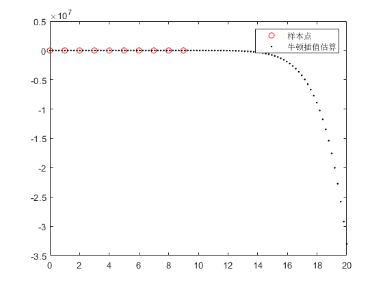

X=(0:1:9);
Y=[67.052,68.008,69.803,72.024,73.400,72.063,74.669,74.487,74.065,76.777];
x=linspace(0,20);
M=1;
[y,R,A,C,L] = newton(X, Y, x, M)
plot(X, Y, 'or', x, y, '.k');
legend('样本点','牛顿插值估算');
x=18
f =-(1695361414010883*x^9)/2305843009213693952 + (4227396721652201*x^8)/144115188075855872 - (8819278816003891*x^7)/18014398509481984 + (4994493159566287*x^6)/1125899906842624 - (3333749145844049*x^5)/140737488355328 + (5324582419842471*x^4)/70368744177664 - (2460605999175011*x^3)/17592186044416 + (4766208684428403*x^2)/35184372088832 - (7120293268944661*x)/140737488355328 + 16763/250
y =
1.0e+07 *
列 1 至 7
0.0000 0.0000 0.0000 0.0000 0.0000 0.0000 0.0000
列 8 至 14
0.0000 0.0000 0.0000 0.0000 0.0000 0.0000 0.0000
列 15 至 21
0.0000 0.0000 0.0000 0.0000 0.0000 0.0000 0.0000
列 22 至 28
0.0000 0.0000 0.0000 0.0000 0.0000 0.0000 0.0000
列 29 至 35
0.0000 0.0000 0.0000 0.0000 0.0000 0.0000 0.0000
列 36 至 42
0.0000 0.0000 0.0000 0.0000 0.0000 0.0000 0.0000
列 43 至 49
0.0000 0.0000 0.0000 0.0000 0.0000 -0.0000 -0.0000
列 50 至 56
-0.0000 -0.0001 -0.0001 -0.0002 -0.0003 -0.0004 -0.0006
列 57 至 63
-0.0008 -0.0012 -0.0016 -0.0022 -0.0030 -0.0040 -0.0052
列 64 至 70
-0.0068 -0.0088 -0.0112 -0.0142 -0.0179 -0.0225 -0.0279
列 71 至 77
-0.0346 -0.0425 -0.0520 -0.0633 -0.0768 -0.0926 -0.1113
列 78 至 84
-0.1332 -0.1588 -0.1886 -0.2233 -0.2634 -0.3098 -0.3632
列 85 至 91
-0.4245 -0.4948 -0.5752 -0.6669 -0.7712 -0.8897 -1.0239
列 92 至 98
-1.1757 -1.3471 -1.5401 -1.7572 -2.0009 -2.2740 -2.5795
列 99 至 100
-2.9207 -3.3012
R =
1.0e+05 *
列 1 至 7
0 0.0000 0.0000 0.0000 0.0000 0.0000 0.0000
列 8 至 14
0.0000 0.0000 0.0000 0.0000 0.0000 0.0000 0.0000
列 15 至 21
0.0000 0.0000 0.0000 0.0000 0.0000 0.0000 0.0000
列 22 至 28
0.0000 0.0000 0.0000 0.0000 0.0000 0.0000 0.0000
列 29 至 35
0.0000 0.0000 0.0000 0.0000 0.0000 0.0000 0.0000
列 36 至 42
0.0000 0.0000 0.0000 0.0000 0.0000 0.0000 0.0000
列 43 至 49
0.0000 0.0000 0.0000 0.0000 0.0000 0.0000 0.0000
列 50 至 56
0.0000 0.0000 0.0000 0.0000 0.0001 0.0001 0.0001
列 57 至 63
0.0002 0.0003 0.0004 0.0006 0.0008 0.0011 0.0015
列 64 至 70
0.0020 0.0026 0.0034 0.0044 0.0057 0.0073 0.0093
列 71 至 77
0.0118 0.0148 0.0185 0.0230 0.0285 0.0351 0.0430
列 78 至 84
0.0525 0.0637 0.0771 0.0930 0.1117 0.1336 0.1594
列 85 至 91
0.1895 0.2247 0.2655 0.3128 0.3676 0.4308 0.5035
列 92 至 98
0.5870 0.6827 0.7922 0.9171 1.0594 1.2211 1.4047
列 99 至 100
1.6125 1.8476
A =
列 1 至 7
67.0520 0 0 0 0 0 0
68.0080 0.9560 0 0 0 0 0
69.8030 1.7950 0.4195 0 0 0 0
72.0240 2.2210 0.2130 -0.0688 0 0 0
73.4000 1.3760 -0.4225 -0.2118 -0.0357 0 0
72.0630 -1.3370 -1.3565 -0.3113 -0.0249 0.0022 0
74.6690 2.6060 1.9715 1.1093 0.3552 0.0760 0.0123
74.4870 -0.1820 -1.3940 -1.1218 -0.5578 -0.1826 -0.0431
74.0650 -0.4220 -0.1200 0.4247 0.3866 0.1889 0.0619
76.7770 2.7120 1.5670 0.5623 0.0344 -0.0704 -0.0432
列 8 至 10
0 0 0
0 0 0
0 0 0
0 0 0
0 0 0
0 0 0
0 0 0
-0.0079 0 0
0.0150 0.0029 0
-0.0150 -0.0038 -0.0007
C =
列 1 至 7
-0.0007 0.0293 -0.4896 4.4360 -23.6877 75.6669 -139.8693
列 8 至 10
135.4638 -50.5927 67.0520
L =
- (1695361414010883*x^9)/2305843009213693952 + (4227396721652201*x^8)/144115188075855872 - (8819278816003891*x^7)/18014398509481984 + (4994493159566287*x^6)/1125899906842624 - (3333749145844049*x^5)/140737488355328 + (5324582419842471*x^4)/70368744177664 - (2460605999175011*x^3)/17592186044416 + (4766208684428403*x^2)/35184372088832 - (7120293268944661*x)/140737488355328 + 16763/250
x =
18
f =
-9.0236e+06
